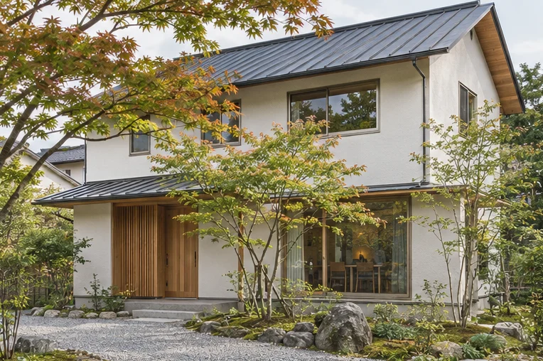
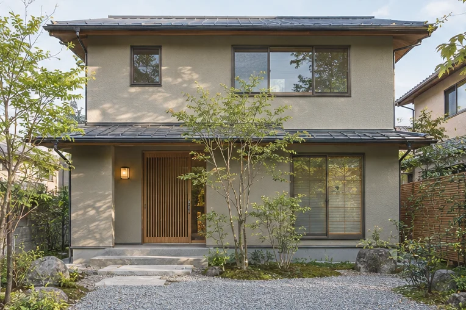
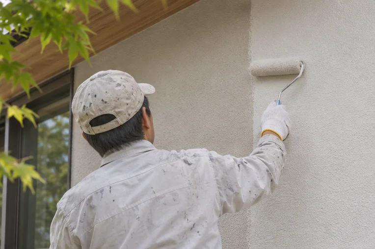
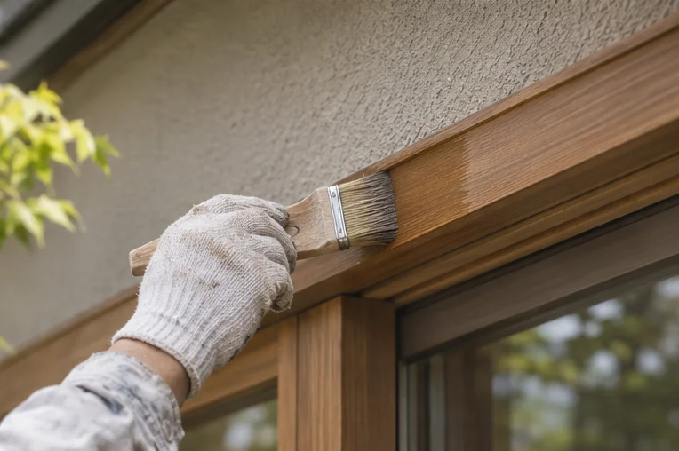

AONIWA PAINT WORKS — 01
住まいの、これからを想う。
塗り替えに、新しい景色を。
街に帰ってきたとき、ふと見上げたくなる家へ。色を選ぶ時間から、これからの日々を考える。

01 / A HOME IN HARMONY
AI生成の参考イメージ・施工実績ではありません02 / OUR APPROACHTHE BEAUTY BEHIND THE FINISH
塗り替えで、大切にしたいこと。
美しさは、
見えない工程から。
外壁を見つめ、色を考え、手を重ねる。仕上がりを支える一つひとつの工程を、写真とともに伝えるためのデザインです。
- 01住まいの状態を見る色を選ぶ前に、外壁の今を知る。
- 02景色に似合う色を考える屋根や庭との調和を大切にする。
- 03手間を伝える完成写真の向こう側まで見せる。
※架空の会社の制作コンセプトです。実在企業の強みや保証を示すものではありません。



掲載写真はすべてAI生成の参考イメージです。施工実績・職人の実写ではありません。